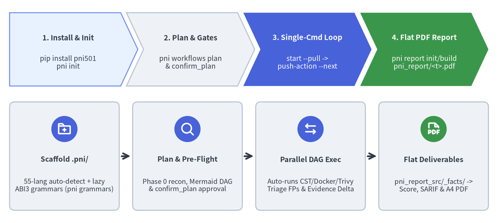
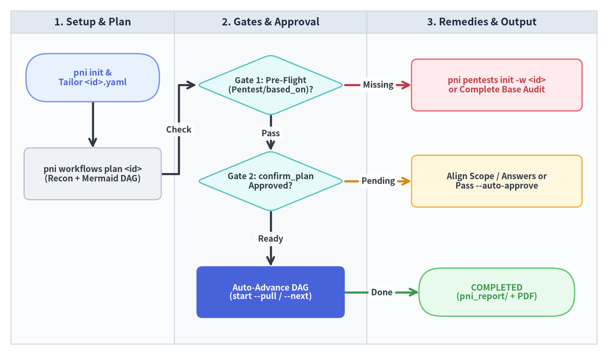

クイックスタートガイド
数分で pni501 (v0.2.0) の導入から初回レポート生成までを体験できます。本ガイドでは、pure-Python CLI のインストール、オンデマンド Tree-sitter 文法キャッシュの確認（pni grammars）、55 言語 対応の .pni/ 初期化、pni workflows plan による Phase 0 偵察と Mermaid DAG プレビュー、単一コマンド完結型の Workflow v2 Pull-Push ループ（--pull / --file / --next / -o）、そしてフラットで自己完結型の A4 PDF レポート（pni_report_src -> pni_report）ビルドまでを解説します。

Source Code
from drawlib.canvas import save, setup
from drawlib.icons import phosphor
from drawlib.smartarts import CardList, ChevronProcess
from drawlib.styles import Styles
setup(width=156, height=70, dpi=150)
pipeline = ChevronProcess(
style=Styles.PrimaryNeutral,
text_style=Styles.DarkBold.patch(text_size=10.5),
description_style=Styles.Dark.patch(text_size=10.0),
corner_angle=65.0,
spacing=1.8,
flat_left_end=True,
)
pipeline.add(
"1. Install & Init",
description="pip install pni501\npni init",
)
pipeline.add(
"2. Plan & Gates",
description="pni workflows plan\n& confirm_plan",
style=Styles.Neutral,
)
pipeline.add(
"3. Single-Cmd Loop",
description="start --pull ->\npush-action --next",
style=Styles.PrimaryFlat,
text_style=Styles.WhiteBold.patch(text_size=10.5),
description_style=Styles.White.patch(text_size=10.0),
)
pipeline.add(
"4. Flat PDF Report",
description="pni report init/build\npni_report/<t>.pdf",
style=Styles.SuccessFlat,
text_style=Styles.WhiteBold.patch(text_size=10.5),
description_style=Styles.White.patch(text_size=10.0),
)
pipeline.draw(xy=(3.0, 43.0), width=150.0, height=23.0)
commands = CardList(
style=Styles.Neutral.patch(shape_r=1.6),
text_style=Styles.DarkBold.patch(text_size=10.4),
description_style=Styles.Dark.patch(text_size=9.8),
badge_shape="circle",
badge_style=Styles.PrimaryFlat,
badge_text_style=Styles.WhiteBold.patch(text_size=10.0),
icon_style=Styles.WhiteBold,
direction="horizontal",
show_arrows=True,
arrow_style=Styles.DarkBold,
spacing=3.0,
)
commands.add(
"Scaffold .pni/",
"55-lang auto-detect + lazy\nABI3 grammars (pni grammars)",
icon=phosphor.folder_plus,
)
commands.add(
"Plan & Pre-Flight",
"Phase 0 recon, Mermaid DAG\n& confirm_plan approval",
icon=phosphor.magnifying_glass,
)
commands.add(
"Parallel DAG Exec",
"Auto-runs CST/Docker/Trivy\nTriage FPs & Evidence Delta",
icon=phosphor.arrows_left_right,
)
commands.add(
"Flat Deliverables",
"pni_report_src/_facts/ ->\nScore, SARIF & A4 PDF",
badge_style=Styles.SuccessFlat,
icon=phosphor.file_pdf,
)
commands.draw(xy=(3.0, 4.0), width=150.0, height=34.0)
save()
1. 前提条件・インストールとオンデマンド文法キャッシュ
pni501 の実行には Python 3.11 以上（>=3.11）が必要です。隔離コンテナでのランタイム検証（run_check）、脆弱性スキャン（security_scan）、およびループバック Web ペネトレーションテスト（web_pentest）を実行する場合は、ホスト環境に Docker（または Podman）が必要です。
pni501 は 52 個の公式 PyPI tree-sitter-* abi3 wheel に支えられた軽量な pure-Python（py3-none-any）パッケージとして配布されます。残りの 5 個の MIT ライセンス文法（COBOL、R、Vue、Protocol Buffers、Dockerfile）は、初回利用時に GitHub Releases から SHA-256 検証付きで自動キャッシュされます（オフライン環境向けに事前取得も可能）：
# 方法 A: pip でインストール
pip install pni501
# 方法 B: uv プロジェクトまたはツール環境に追加
uv add pni501
# インストールの確認と CLI サブコマンド一覧の表示
pni --version # または: pni version
pni --help
# 任意: GitHub Releases 経由の 5 つの追加 ABI3 文法キャッシュを確認・事前取得
pni grammars status
pni grammars prefetch --all
2. ステップ 1：対象リポジトリで .pni/ を初期化する
評価対象となるリポジトリのルートディレクトリに移動し、pni init を実行します：
pni init
pni init は 55 言語レジストリ（Tier A フル監査 20 言語・Tier B 宣言的静的監査 20 言語・Tier C コンパニオン IaC/スキーマ/ビルド/設定 15 言語）に基づきマニフェストおよびソースから対象リポジトリの主言語を自動検出し、.pni/ ワークスペースを生成します：
.pni/pni.toml— デフォルトの対象ディレクトリ（[targets]）およびフラット Drawlib レポート設定（[report]、既定値pni_report_src -> pni_report）を管理する設定ファイル。.pni/workflows/full_audit.yaml&quick_check.yaml— 112 個の組み込みワークフローテンプレート から生成される Workflow v2 条件付き DAG 定義（needs:/when:）。.pni/rules/&.pni/actions/— 356 個の組み込みルール と 182 個のアクションテンプレート をローカル上書きするためのディレクトリ。.pni/instructions.md— Code AI Agent 向けの Workflow v2 ブートストラップ手順書。
3. ステップ 2：Phase 0 プラン・Mermaid DAG・Pre-Flight ゲートの検証
ワークフロー開始前に .pni/workflows/<id>.yaml の targets.root、targets.source、targets.tests、targets.docs が実際のリポジトリ構成と一致していることを確認し、pni workflows plan <id> で Phase 0 軽量偵察・Pre-Flight 準備ゲート・Python 検証済み Mermaid Execution DAG をプレビューします：
# ワークフロー一覧 (audit / rollup / migration / progress) とステップ定義の確認
pni workflows list
pni workflows show full_audit
# Phase 0 偵察と検証済み Mermaid Execution DAG のプレビュー（-o でファイル出力も可能）
pni workflows plan full_audit
pni workflows plan full_audit -o .pni/cache/plan_preview.md
# カスタムまたは AI 生成 Mermaid 図の構文検証（Layer 1 静的チェック + 任意 --browser）
pni validate-mermaid .pni/cache/plan_preview.md

Source Code
from drawlib.canvas import save, setup
from drawlib.diagrams.flow import Decision, End, FlowDiagram, Process, Start
from drawlib.styles import Styles
setup(width=164, height=96, dpi=150)
flow = FlowDiagram(
node_style=Styles.WhiteBordered.patch(
text_color=Styles.Dark.text_color, shape_r=1.6, text_size=10.0
),
edge_style=Styles.DarkBold,
edge_text_style=Styles.DarkBold.patch(text_size=10.0),
width=158.0,
height=90.0,
)
flow.add_lane("1. Setup & Plan", width=44.0)
flow.add_lane("2. Gates & Approval", width=52.0)
flow.add_lane("3. Remedies & Output", width=62.0)
n_init = flow.add(
Start(
"pni init &\nTailor <id>.yaml",
width=36.0,
height=13.0,
style=Styles.PrimaryNeutral.patch(shape_r=6.0),
text_style=Styles.PrimaryBold.patch(text_size=10.2),
),
xy=(22.0, 72.0),
)
n_show = flow.add(
Process(
"pni workflows plan <id>\n(Recon + Mermaid DAG)",
width=37.0,
height=14.0,
style=Styles.Neutral.patch(shape_r=1.6),
text_style=Styles.DarkBold.patch(text_size=10.0),
),
xy=(22.0, 46.0),
)
g_preflight = flow.add(
Decision(
"Gate 1: Pre-Flight\n(Pentest/based_on)?",
width=40.0,
height=16.5,
style=Styles.SecondaryNeutral,
text_style=Styles.DarkBold.patch(text_size=9.8),
),
xy=(70.0, 70.0),
)
r_preflight = flow.add(
Process(
"pni pentests init -w <id>\nor Complete Base Audit",
width=46.0,
height=14.0,
style=Styles.DangerNeutral.patch(shape_r=1.6),
text_style=Styles.DangerBold.patch(text_size=10.0),
),
xy=(131.0, 70.0),
)
g_confirm = flow.add(
Decision(
"Gate 2: confirm_plan\nApproved?",
width=40.0,
height=16.5,
style=Styles.SecondaryNeutral,
text_style=Styles.DarkBold.patch(text_size=10.0),
),
xy=(70.0, 44.0),
)
r_confirm = flow.add(
Process(
"Align Scope / Answers or\nPass --auto-approve",
width=46.0,
height=14.0,
style=Styles.WarningNeutral.patch(shape_r=1.6),
text_style=Styles.DarkBold.patch(text_size=10.0),
),
xy=(131.0, 44.0),
)
n_start = flow.add(
Process(
"Auto-Advance DAG\n(start --pull / --next)",
width=40.0,
height=14.0,
style=Styles.PrimaryFlat.patch(shape_r=1.6),
text_style=Styles.WhiteBold.patch(text_size=10.0),
),
xy=(70.0, 14.0),
)
n_done = flow.add(
End(
"COMPLETED\n(pni_report/ + PDF)",
width=42.0,
height=13.0,
style=Styles.SuccessNeutral.patch(shape_r=6.0),
text_style=Styles.SuccessBold.patch(text_size=10.2),
),
xy=(131.0, 14.0),
)
n_init.connect(n_show, start_side="bottom", end_side="top")
n_show.connect(g_preflight, label="Check", start_side="right", end_side="left")
g_preflight.connect(r_preflight, label="Missing", start_side="right", end_side="left", style=Styles.DangerBold)
g_preflight.connect(g_confirm, label="Pass", start_side="bottom", end_side="top")
g_confirm.connect(r_confirm, label="Pending", start_side="right", end_side="left", style=Styles.WarningBold)
g_confirm.connect(n_start, label="Ready", start_side="bottom", end_side="top")
n_start.connect(n_done, label="Done", start_side="right", end_side="left", style=Styles.SuccessBold)
flow.draw(xy=(3.0, 3.0))
save()
ワークフローに動的 Web ペネトレーションテスト（uses: web_penetration_audit）が含まれる場合は、ステートフル実行を開始する前にペネトレーションテストスイートを初期化・単体検証します：
# .pni/pentests/<target>/ を生成し、SQLite 準備なしで単体ステップを直接テスト
pni pentests init -w full_audit
pni workflows run-action full_audit web_pentest
4. ステップ 3：単一コマンド完結型 Workflow v2 ループの実行
Workflow v2 では、--pull、--file、--next、および -o/--output によりシェルリダイレクトや && 連結なしで安全にループを実行でき、決定論的コレクタも並列自動進行します：
# 1a. 対話モード開始：セッション作成と同時に act-01 (confirm_plan) を1コマンドで取得
pni workflows start full_audit --pull
# 1b. CI / 自動実行モード：confirm_plan を自動承認し、並列コレクタを即座に自動実行
pni workflows start full_audit --auto-approve --pull -o .pni/cache/action_next.md
# 2. JSON ファイルから検証済みペイロードを提出し、そのまま次の AI ステップへ進行
pni workflows push-action wf-1a2b3c4d act-01 --file .pni/cache/wf-1a2b3c4d/input_act-01.json --next
# 3. 並列実行可能なアクション一覧や全体進捗をいつでも確認
pni workflows get-actions wf-1a2b3c4d --ready --json -o .pni/cache/ready_actions.json
pni workflows status wf-1a2b3c4d
ループ中、エンジンは以下の処理を自動で行います：
- 空 ACK ゼロ＆並列ファクト収集：DAG が決定論的ステップ（
project_inspect、ast_analyze、run_check、security_scan、web_pentest、migration_analyze、progress_analyze）に到達すると、pniは実行可能な全コレクタを並列実行し、.pni/cache/<workflow_id>/facts.jsonへ保存した上で次の AI ステップへ自動遷移します。 - Push 時のスキーマ・実在パス・FP トリアージ検証：
record_architecture、ai_interpret、emit_score、synthesize_rollup、emit_migration_plan、emit_progressでは、push-actionが Pydantic モデル検証・module_inventory実在パス照合・監査証跡付きfinding_adjustments（waive/reclassify）を検証し、Executed Audit DAG と 7 軸エビデンス Δ を含むpni_report/<target>_score.json、*_summary.json、*_findings.sarifを出力します。
5. ステップ 4：フラットで自己完結型の Drawlib レポートをビルド
emit_score 完了時、PNI は検証済みの根拠 JSON 群（plan.json, facts.json, architecture.json, score.json）を pni_report_src/_facts/ へ自動同期します。最終ステップの write_drawlib_report では、ネスト階層のないフラット構成（デフォルト pni_report_src -> pni_report）でレポートを初期化・座標グリッド（-g）検証・A4 ベクター PDF（および任意で HTML）ビルドし、完了報告を提出します：
# デフォルトのフラット構成 pni_report_src/ を初期化し、pni_report/full_audit.pdf をビルド
pni report init full_audit --lang ja --style google
pni report build full_audit
# 最終完了ペイロードをファイルから提出してワークフローを COMPLETED に遷移
pni workflows push-action wf-1a2b3c4d act-12 --file .pni/cache/wf-1a2b3c4d/input_act-12.json
（本ドキュメントサイトのような統合ポータルでは、--src-dir docs_src/reports/<slug> --output-dir docs/reports/<slug> のようにフラットな出力先を直接指定できます。）
続いて 3つの主要ユースケース または ワークフローと Pre-Flight ゲート に進んでください。